Aligning heart ST data from ISS
Serial sections of 6.5 PCW human heart from the Human Cell Atlas https://doi.org/10.1016/j.cell.2019.11.025
For two sets of cells, STalign.align_cells is an alternative that runs the main steps of this tutorial in one call; see the last section.
[1]:
# import dependencies
import numpy as np
import matplotlib.pyplot as plt
import pandas as pd
import torch
# make plots bigger
plt.rcParams["figure.figsize"] = (12,10)
[ ]:
# OPTION A: import STalign after pip or pipenv install
from STalign import STalign
[2]:
## OPTION B: skip cell if installed STalign with pip or pipenv
import sys
sys.path.append("../../STalign")
## import STalign from upper directory
import STalign
We have already downloaded single cell spatial transcriptomics datasets and placed the files in a folder called data_data.
We can read in the cell information for the first dataset using pandas as pd.
[3]:
# Single cell data 1
# read in data
fname = '../heart_data/CN73_E1.csv.gz'
df1 = pd.read_csv(fname)
print(df1.head())
Unnamed: 0 x y intensity area id color \
0 1 9220.548828 27954.275391 126.357140 34 NaN #000000
1 2 16412.062500 27723.751953 170.324326 86 NaN #000000
2 3 16451.130859 27567.246094 170.600006 46 NaN #000000
3 4 18739.607422 27238.117188 170.125000 34 NaN #000000
4 5 18713.855469 27219.013672 171.300003 46 NaN #000000
acronym right.left rostral.caudal spot.id image
0 NaN -58.104428 775.168105 NaN CN73_E1
1 NaN 127.199485 775.176714 NaN CN73_E1
2 NaN 132.844121 775.176714 NaN CN73_E1
3 NaN 216.521727 775.176714 NaN CN73_E1
4 NaN 216.521080 775.176714 NaN CN73_E1
For alignment with STalign, we only need the cell centroid information. So we can pull out this information. We can further visualize the cell centroids to get a sense of the variation in cell density that we will be relying on for our alignment by plotting using matplotlib.pyplot as plt.
[4]:
# get cell centroid coordinates
xI = np.array(df1['x'])
yI = np.array(df1['y'])
# plot
fig,ax = plt.subplots()
ax.scatter(xI,yI,s=1,alpha=0.2)
[4]:
<matplotlib.collections.PathCollection at 0x165bddb50>
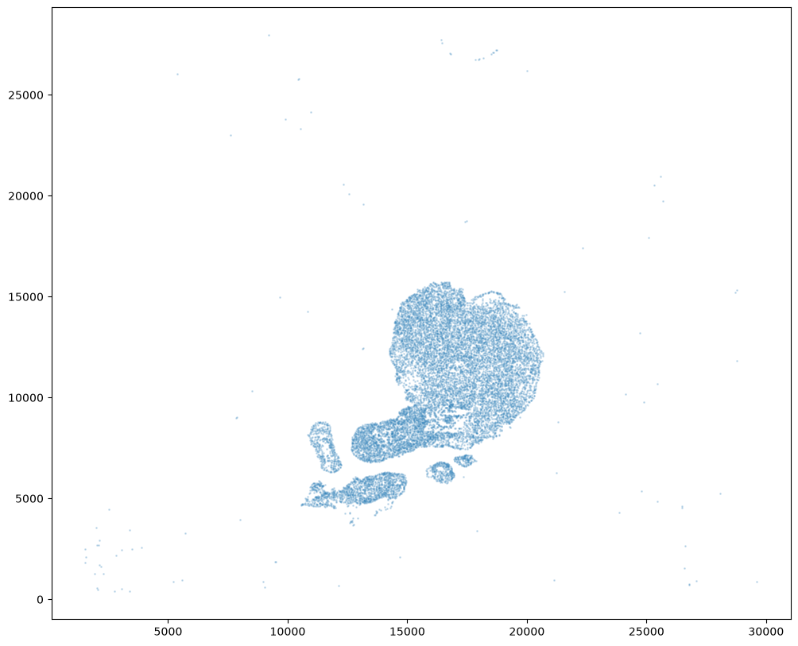
We will first use STalign to rasterize the single cell centroid positions into an image. Assuming the single-cell centroid coordinates are in microns, we will perform this rasterization at a 100 micron resolution. We can visualize the resulting rasterized image.
Note that points are plotting with the origin at bottom left while images are typically plotted with origin at top left so we’ve used invert_yaxis() to invert the yaxis for visualization consistency.
[5]:
# rasterize at 100um resolution so image looks smooth
XI,YI,I,fig = STalign.rasterize(xI,yI,dx=100)
# plot
ax = fig.axes[0]
ax.invert_yaxis()
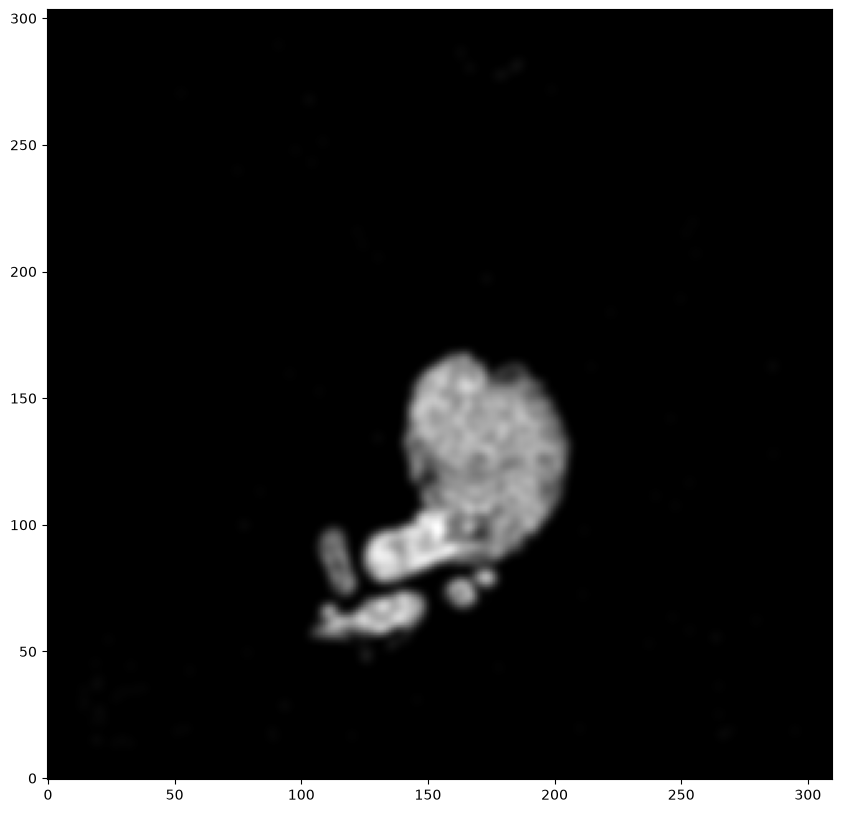
Now, we can repeat this for the cell information from the second dataset.
[6]:
# Single cell data 2
# read in data
fname = '../heart_data/CN73_E2.csv.gz'
df2 = pd.read_csv(fname, skiprows=[1]) # first row is data type
print(df2.head())
Unnamed: 0 x y intensity area id color \
0 12185 3965.500000 26604.583984 178.437500 32 NaN #000000
1 12186 902.051270 26600.513672 151.615387 26 NaN #000000
2 12187 3949.748047 26560.296875 156.199997 90 NaN #000000
3 12188 6231.878906 26551.273438 152.812500 22 NaN #000000
4 12189 12881.071289 26510.095703 197.307693 112 NaN #000000
acronym right.left rostral.caudal spot.id image
0 NaN -459.896378 1097.377561 NaN CN73_E2
1 NaN -643.887328 1104.877930 NaN CN73_E2
2 NaN -461.396305 1094.377414 NaN CN73_E2
3 NaN -324.403043 1089.877192 31.0 CN73_E2
4 NaN 95.076323 1098.877635 10.0 CN73_E2
[7]:
# get cell centroids
xJ = np.array(df2['x'])
yJ = np.array(df2['y'])
# plot
fig,ax = plt.subplots()
ax.scatter(xJ,yJ,s=1,alpha=0.2,c='#ff7f0e')
[7]:
<matplotlib.collections.PathCollection at 0x165cf41d0>
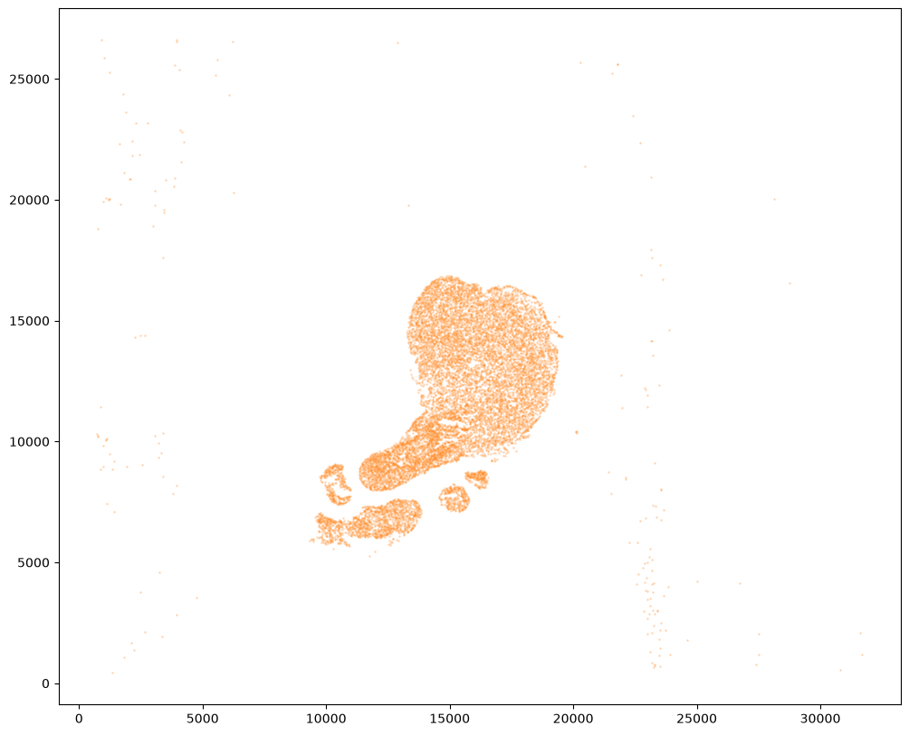
[8]:
# rasterize and plot
XJ,YJ,J,fig = STalign.rasterize(xJ,yJ,dx=100)
ax = fig.axes[0]
ax.invert_yaxis()
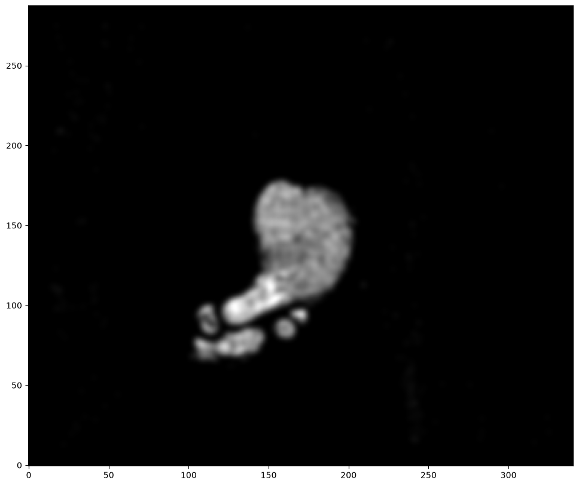
Note that plotting the cell centroid positions from both datasets shows that non-linear local alignment is needed.
[9]:
# plot
fig,ax = plt.subplots()
ax.scatter(xI,yI,s=1,alpha=0.1)
ax.scatter(xJ,yJ,s=1,alpha=0.2)
[9]:
<matplotlib.collections.PathCollection at 0x168289c10>
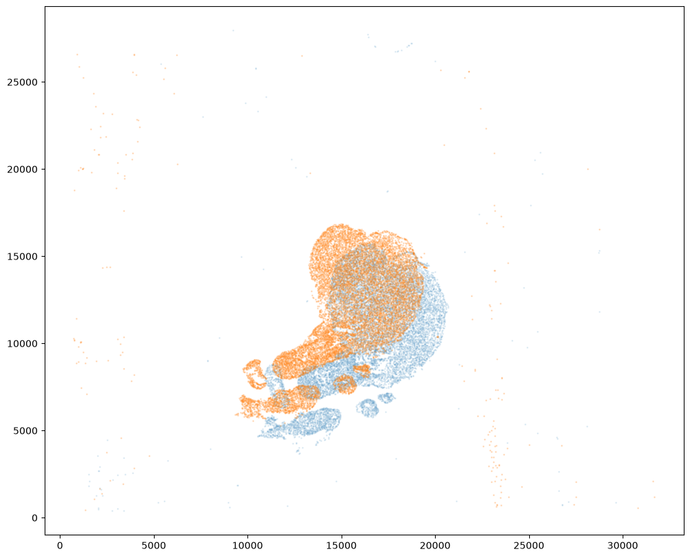
We can also plot the rasterized images next to each other.
[10]:
# get extent of images
extentI = STalign.extent_from_x((YI,XI))
extentJ = STalign.extent_from_x((YJ,XJ))
# plot rasterized images
fig,ax = plt.subplots(2,1)
ax[0].imshow((I.transpose(1,2,0).squeeze()), extent=extentI)
ax[1].imshow((J.transpose(1,2,0).squeeze()), extent=extentJ)
ax[0].invert_yaxis()
ax[1].invert_yaxis()
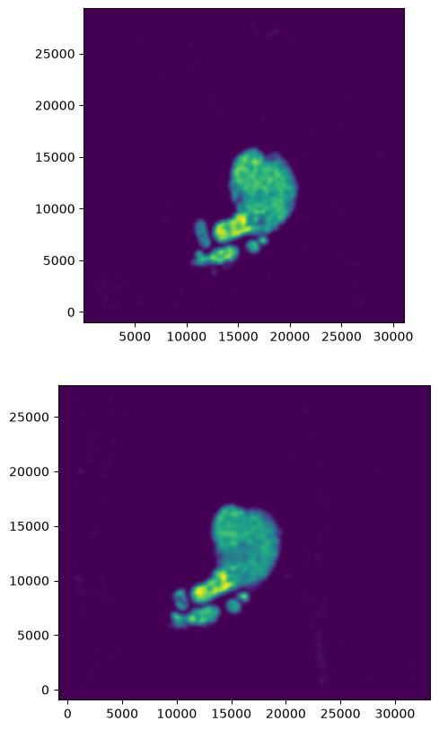
Now we will perform our alignment. There are many parameters that can be tuned for performing this alignment. If we don’t specify parameters, defaults will be used.
[11]:
# set device for building tensors
if torch.cuda.is_available():
torch.set_default_device('cuda:0')
else:
torch.set_default_device('cpu')
[12]:
%%time
# run LDDMM
# specify device (default device for STalign.LDDMM is cpu)
if torch.cuda.is_available():
device = 'cuda:0'
else:
device = 'cpu'
# keep all other parameters default
params = {
'niter':1000,
'device':device,
'diffeo_start':100,
'a':250,
'epV':1000,
'sigmaB':0.1,
'muB': torch.tensor([0,0,0]), # black is background in target
}
Ifoo = np.vstack((I, I, I)) # make RGB instead of greyscale
Jfoo = np.vstack((J, J, J)) # make RGB instead of greyscale
out = STalign.LDDMM([YI,XI],Ifoo,[YJ,XJ],Jfoo,**params)
CPU times: user 1min 16s, sys: 5.85 s, total: 1min 22s
Wall time: 14.3 s
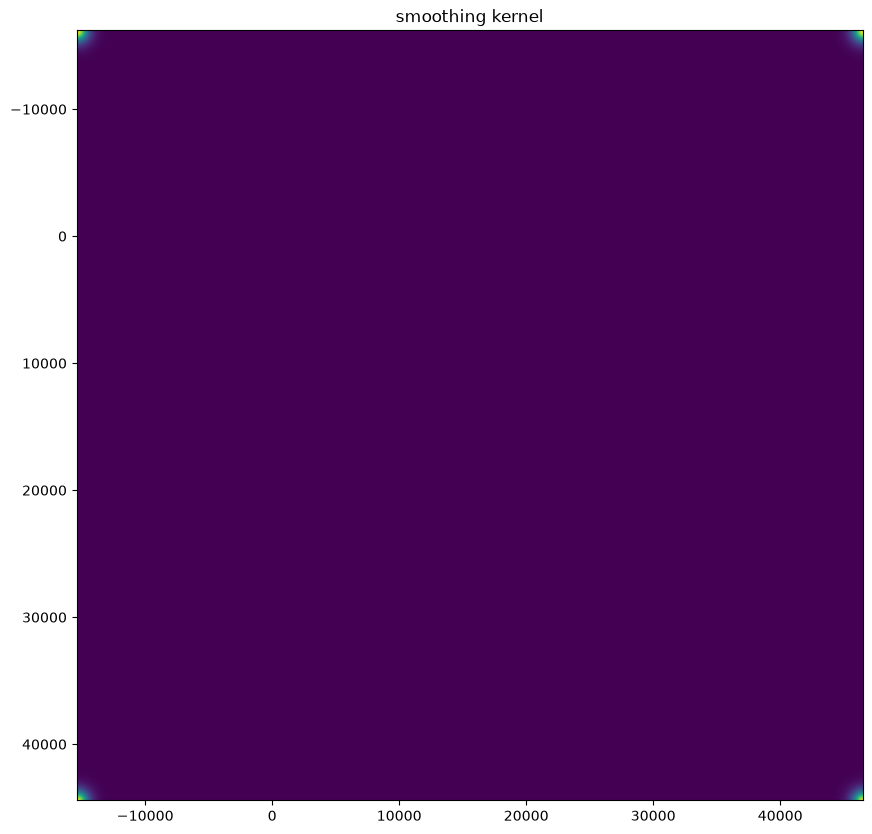
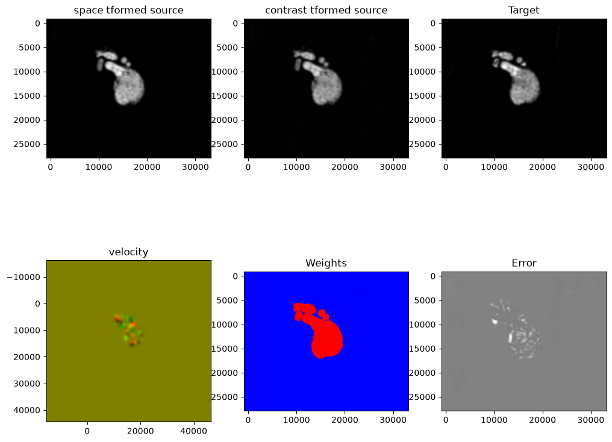
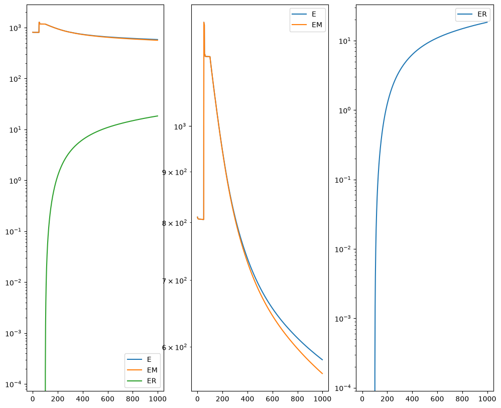
[13]:
# get necessary output variables
A = out['A']
v = out['v']
xv = out['xv']
Plots generated throughout the alignment can be used to give you a sense of whether the parameter choices are appropriate and whether your alignment is converging on a solution.
We can also evaluate the resulting alignment by applying the transformation to visualize how our source and target images were deformed to achieve the alignment.
[14]:
# apply transform
phii = STalign.build_transform(xv,v,A,XJ=[YJ,XJ],direction='b')
phiI = STalign.transform_image_source_to_target(xv,v,A,[YI,XI],Ifoo,[YJ,XJ])
#switch tensor from cuda to cpu for plotting with numpy
if phii.is_cuda:
phii = phii.cpu()
if phiI.is_cuda:
phiI = phiI.cpu()
# plot with grids
fig,ax = plt.subplots()
levels = np.arange(-100000,100000,1000)
ax.contour(XJ,YJ,phii[...,0],colors='r',linestyles='-',levels=levels)
ax.contour(XJ,YJ,phii[...,1],colors='g',linestyles='-',levels=levels)
ax.set_aspect('equal')
ax.set_title('source to target')
ax.imshow(phiI.permute(1,2,0)/torch.max(phiI),extent=extentJ)
ax.invert_yaxis()
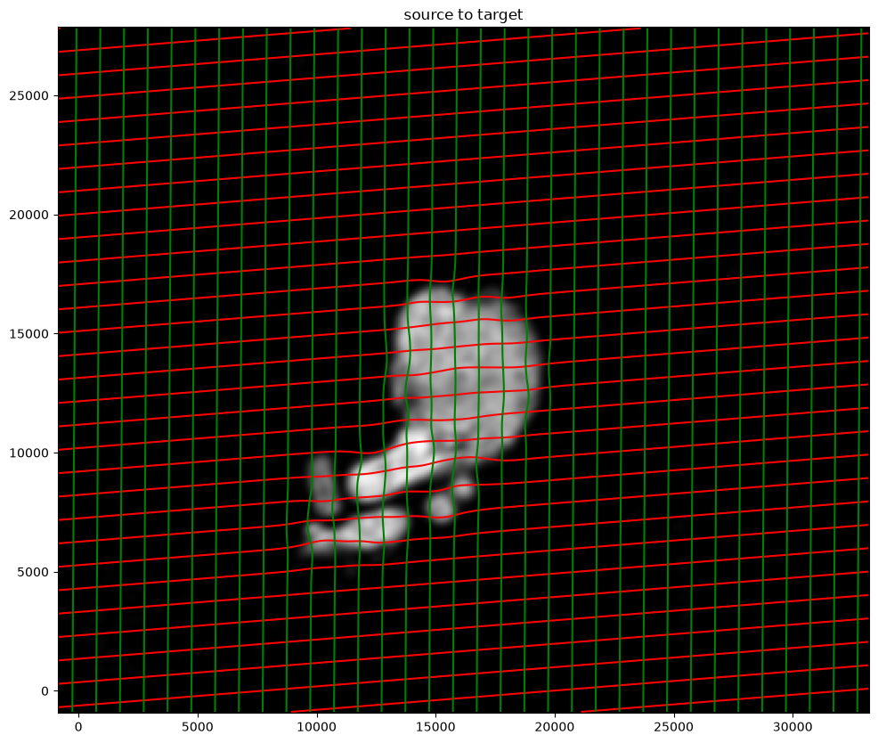
Note that because of our use of LDDMM, the resulting transformation is invertible.
[15]:
# transform is invertible
phi = STalign.build_transform(xv,v,A,XJ=[YI,XI],direction='f')
phiiJ = STalign.transform_image_target_to_source(xv,v,A,[YJ,XJ],Jfoo,[YI,XI])
#switch tensor from cuda to cpu for plotting with numpy
if phi.is_cuda:
phi = phi.cpu()
if phiiJ.is_cuda:
phiiJ = phiiJ.cpu()
# plot with grids
fig,ax = plt.subplots()
levels = np.arange(-100000,100000,1000)
ax.contour(XI,YI,phi[...,0],colors='r',linestyles='-',levels=levels)
ax.contour(XI,YI,phi[...,1],colors='g',linestyles='-',levels=levels)
ax.set_aspect('equal')
ax.set_title('target to source')
ax.imshow(phiiJ.permute(1,2,0)/torch.max(phiiJ),extent=extentI)
ax.invert_yaxis()
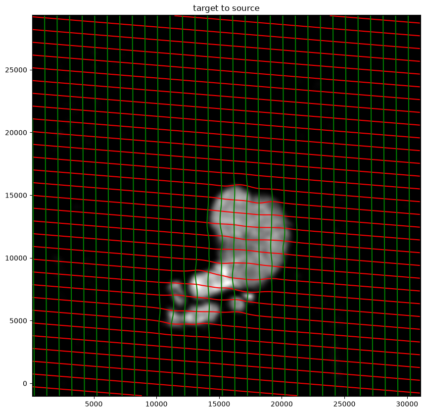
Finally, we can apply our transform to the original sets of single cell centroid positions to achieve their new aligned positions.
[16]:
# apply transform to original points
tpointsJ = STalign.transform_points_target_to_source(xv,v,A, np.stack([yJ, xJ], 1))
#switch tensor from cuda to cpu for plotting with numpy
if tpointsJ.is_cuda:
tpointsJ = tpointsJ.cpu()
# just original points for visualizing later
tpointsI = np.stack([xI, yI])
And we can visualize the results.
[17]:
# plot results
fig,ax = plt.subplots()
ax.scatter(tpointsI[0,:],tpointsI[1,:],s=1,alpha=0.1)
ax.scatter(tpointsJ[:,1],tpointsJ[:,0],s=1,alpha=0.2) # also needs to plot as y,x not x,y
[17]:
<matplotlib.collections.PathCollection at 0x377e31730>
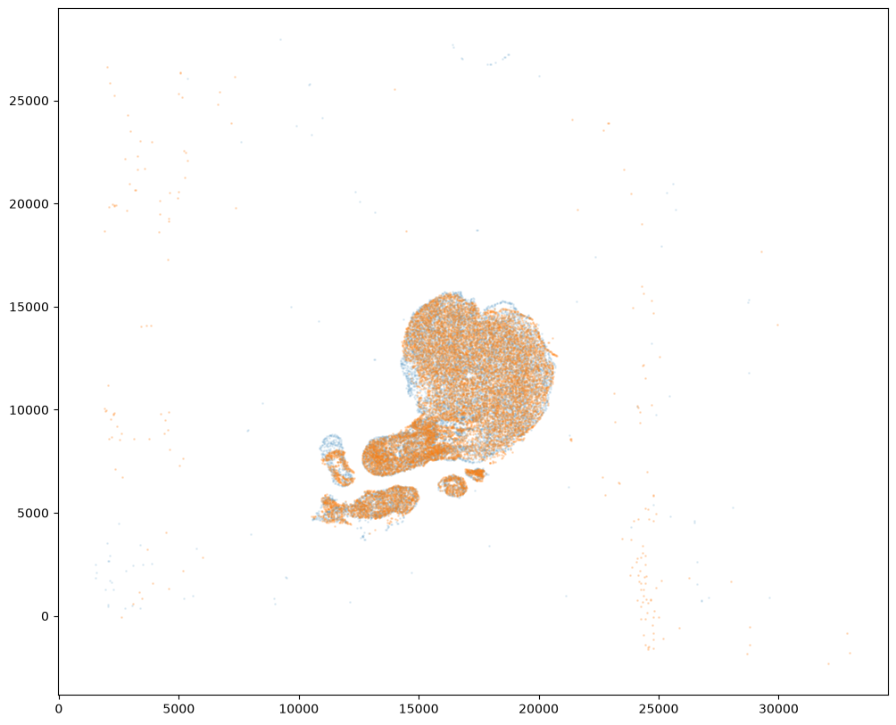
[18]:
# save results: the cells of CN73_E2 (the target) with their positions in the coordinates of CN73_E1 (the source)
# tpointsJ holds rows (y, x)
results = df2.copy()
results['aligned_x'] = tpointsJ[:, 1].numpy()
results['aligned_y'] = tpointsJ[:, 0].numpy()
results.head()
[18]:
| Unnamed: 0 | x | y | intensity | area | id | color | acronym | right.left | rostral.caudal | spot.id | image | aligned_x | aligned_y | |
|---|---|---|---|---|---|---|---|---|---|---|---|---|---|---|
| 0 | 12185 | 3965.500000 | 26604.583984 | 178.437500 | 32 | NaN | #000000 | NaN | -459.896378 | 1097.377561 | NaN | CN73_E2 | 5060.116023 | 26379.960921 |
| 1 | 12186 | 902.051270 | 26600.513672 | 151.615387 | 26 | NaN | #000000 | NaN | -643.887328 | 1104.877930 | NaN | CN73_E2 | 1993.841267 | 26627.287730 |
| 2 | 12187 | 3949.748047 | 26560.296875 | 156.199997 | 90 | NaN | #000000 | NaN | -461.396305 | 1094.377414 | NaN | CN73_E2 | 5044.618353 | 26336.187470 |
| 3 | 12188 | 6231.878906 | 26551.273438 | 152.812500 | 22 | NaN | #000000 | NaN | -324.403043 | 1089.877192 | 31.0 | CN73_E2 | 7328.927684 | 26139.672383 |
| 4 | 12189 | 12881.071289 | 26510.095703 | 197.307693 | 112 | NaN | #000000 | NaN | 95.076323 | 1098.877635 | 10.0 | CN73_E2 | 13984.557638 | 25551.958969 |
[19]:
results.to_csv('../heart_data/CN73_E2_STalign_to_CN73_E1.csv.gz', index=False, compression='gzip')
Alternative: align_cells
STalign.align_cells runs the steps above in one call. It rasterizes both sets of cells at 15 µm with a Gaussian kernel of 30 µm standard deviation, and runs LDDMM coarse to fine (500 iterations on 60 µm pixels, then 500 on 30 µm), with the step sizes and the regularization chosen from the images. It chooses these settings for you: the walkthrough above shows what each of them does, and align_cells accepts them as arguments. In our tests on simulated deformations of real cell sets,
its error was less than half that of LDDMM on a single raster. It returns the same output as LDDMM, so the transform functions work on it as above.
By default, align_cells uses a mixture model (mixture='em') that gives a low weight to parts of the target that look like background where the source has tissue, which helps when the target section lacks tissue that the source has. These are complete serial sections, for which the mixture model can do harm (in our tests it made the alignment of 5 of 8 serial heart sections worse), so we turn it off with mixture=None.
[20]:
%%time
# align the cells, without the mixture model
out_cells = STalign.align_cells(xI, yI, xJ, yJ, mixture=None, device=device)
CPU times: user 1min 32s, sys: 5.16 s, total: 1min 37s
Wall time: 22.2 s
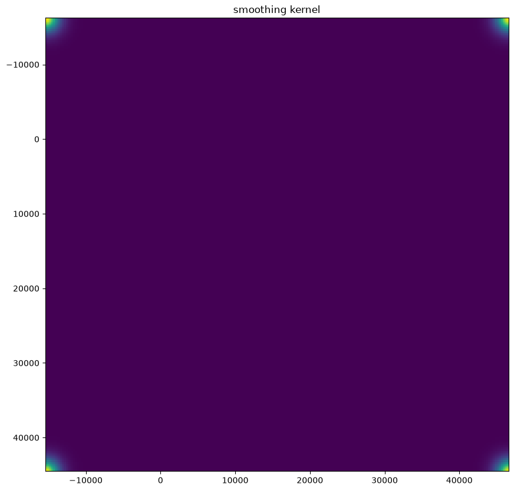
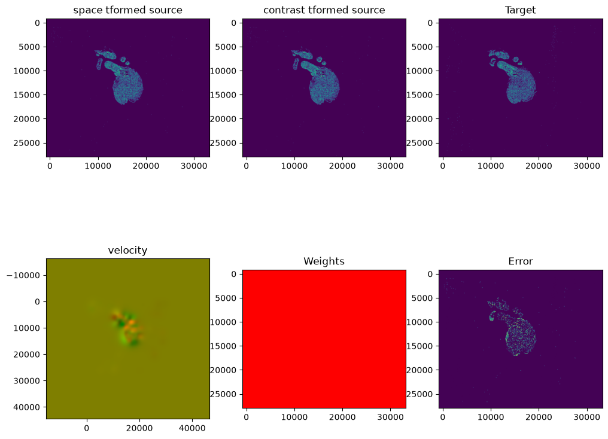
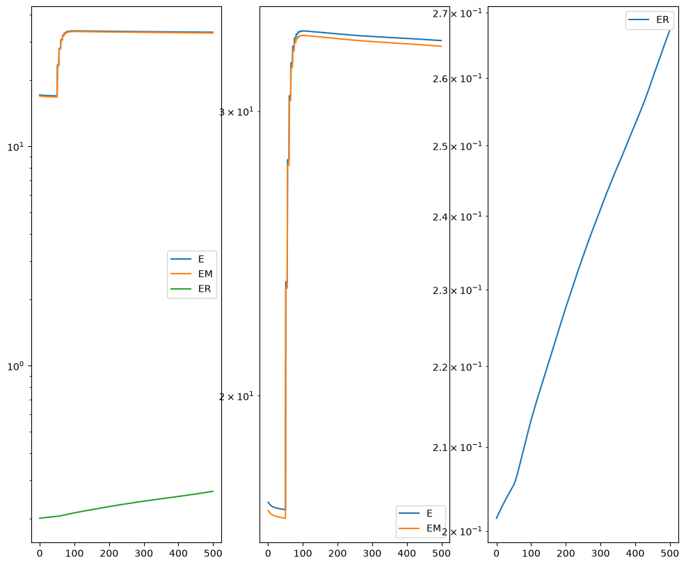
[21]:
# apply transform to original points of target to source
tpointsJ_cells = STalign.transform_points_target_to_source(out_cells['xv'],out_cells['v'],out_cells['A'], np.stack([yJ, xJ], 1))
#switch tensor from cuda to cpu for plotting with numpy
if tpointsJ_cells.is_cuda:
tpointsJ_cells = tpointsJ_cells.cpu()
We can compare the result with that of the step by step alignment above.
[22]:
fig,ax = plt.subplots(1,2)
ax[0].scatter(tpointsI[0,:],tpointsI[1,:],s=1,alpha=0.1, label='source')
ax[0].scatter(tpointsJ[:,1],tpointsJ[:,0],s=1,alpha=0.2, label='target STaligned step by step')
ax[1].scatter(tpointsI[0,:],tpointsI[1,:],s=1,alpha=0.1, label='source')
ax[1].scatter(tpointsJ_cells[:,1],tpointsJ_cells[:,0],s=1,alpha=0.2, label='target STaligned with align_cells')
ax[0].legend(markerscale = 10, loc = 'lower left')
ax[1].legend(markerscale = 10, loc = 'lower left')
[22]:
<matplotlib.legend.Legend at 0x37419b470>
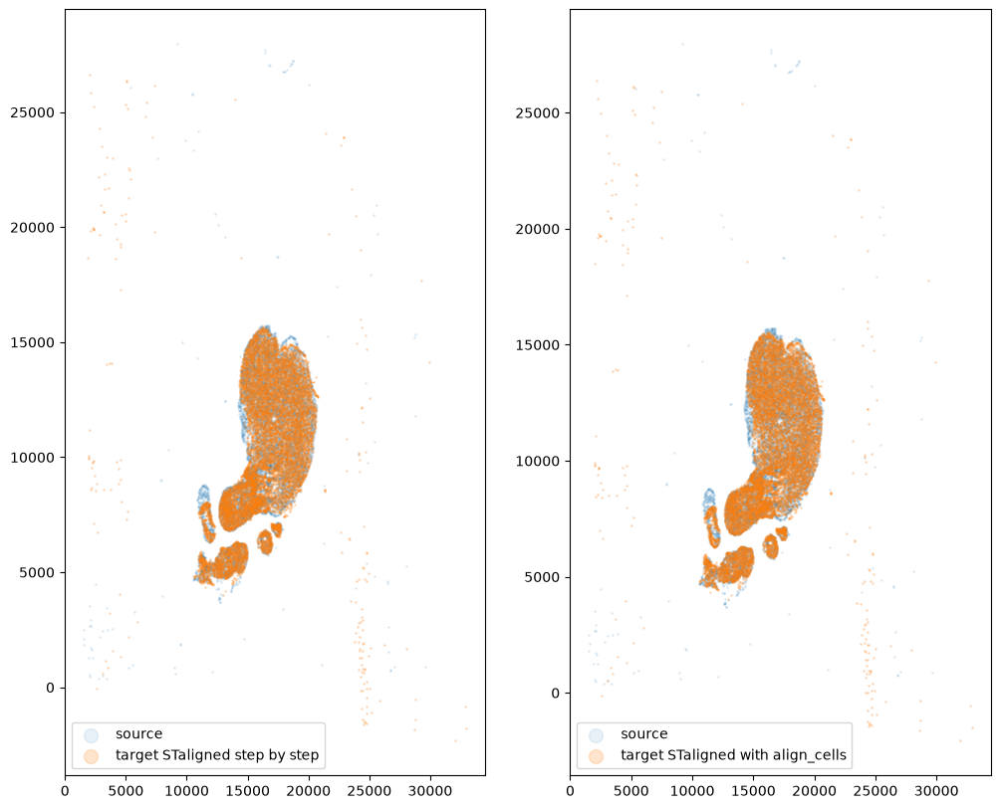
[23]:
# distance between the two aligned positions of each cell
d = np.sqrt(np.sum((tpointsJ_cells.numpy() - tpointsJ.numpy())**2, axis=1))
print('distance between the two results: mean {:.1f}, median {:.1f}, 95th percentile {:.1f}'.format(
np.mean(d), np.median(d), np.percentile(d, 95)))
distance between the two results: mean 78.4, median 69.3, 95th percentile 170.8
The two alignments are similar: half of the cells are placed within about 70 µm of each other, less than a pixel of the 100 µm images above.